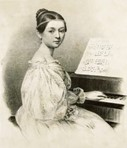
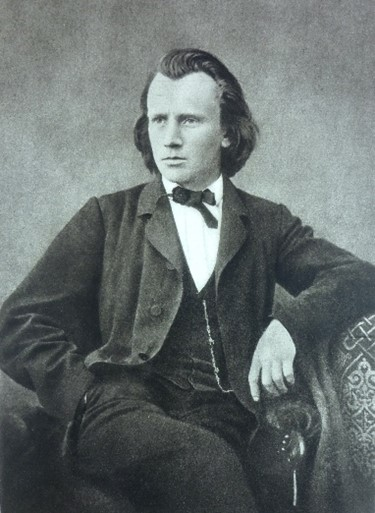
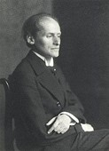
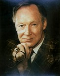
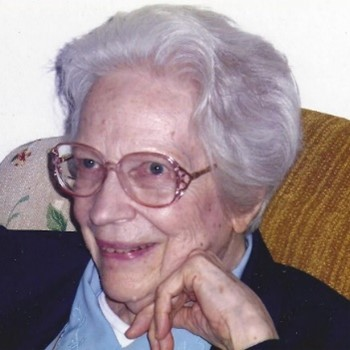
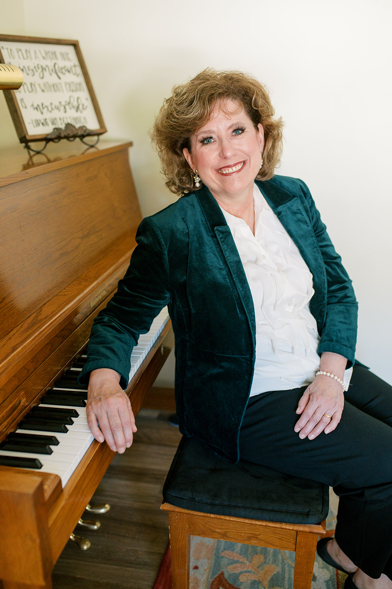

This tree documents the lineage of music educators who have influenced Amy Eisenhutt, tracing the connections from
her teachers to the teachers before them, showcasing the educational roots that have shaped her professional journey.

Clara Josephine Schumann; née Wieck; (1819 - 1896) was a German pianist, composer,
and piano teacher. Regarded as one of the most distinguished pianists of the Romantic era,
she exerted her influence for more than 6 decades concert career. Clara Schumann became
one of the 19th century's foremost piano virtuosos.
She married one of the greatest composers in history, Robert Schumann, had eight children. She also composed solo piano pieces, a piano concerto, chamber music, choral pieces, and songs. But perhaps her most enduring legacy is that she invented the classical piano recital.
She married one of the greatest composers in history, Robert Schumann, had eight children. She also composed solo piano pieces, a piano concerto, chamber music, choral pieces, and songs. But perhaps her most enduring legacy is that she invented the classical piano recital.

Johannes Brahms (1833 - 1897) was a German composer, virtuoso pianist, and conductor
of the mid-Romantic period. Brahms sought Robert Schumann's approval, receiving
both his and Clara Schumann's vigorous support and guidance. His compositions include four
symphonies, four concertos, a Requiem, and many songs, amongst other music for symphony
orchestra, piano, organ, voices, and chamber ensembles.
They remain a staple of the concert repertoire.

Carl Rudolf Hermann Friedberg (1872 - 1955) was a German pianist and teacher of Jewish origin.
Friedberg studied piano with Clara Schumann. From 1923 until his retirement in 1946,
Carl Friedberg was principal piano teacher at the New York Institute of Musical Art
(the institution which became the Juilliard School of Music from 1926).
Friedberg's career as a performer spanned over 60 years. In 1893 he had
given an all-Brahms recital in the presence of the composer, who highly
admired his playing and who later coached him in private on the performance
of the majority of his piano works. Although Friedberg's repertory was wide,
he became associated with the music of Beethoven, and especially of Schumann and Brahms.

William James Browning (1924 - 1997) was an American concert pianist,
vocal coach and piano pedagogue. His teachers included among others
Carl Friedberg who studied with Clara Schumann and Johannes Brahms.
At the American Conservatory he earned a Master's Degree in Musical Performance.
Following receipt of his master's degree, he continued to teach at the
American Conservatory of Music for 32 years. Throughout his career
Browning performed extensively throughout North America, the UK, China and South Korea.

Margaret E. Nichols; née McCall; née McCall; (1918 - 2018) received her Bachelor of Music
degree from DePauw University and her Master of Music degree in piano
performance from the American Conservatory of Music. She taught for 70 years
in the greater Chicago area and served on the piano faculty of the Park Forest
Conservatory of Music, VanderCook College of Music, Sherwood Conservatory of Music,
and The Academy of Movement and Music in Oak Park. She was an active soloist and
accompanist and also performed as a piano duo with Josette Behrend. She was an adjudicator,
clinician, and certified member of local, state and National Associations of Music Teachers (MTNA).

Studied with concert pianist and teacher Margaret Nichols for ten years.
She has been a piano teacher, accompanist and performer for over thirty years and currently maintains a private studio in Liberty, Missouri.
She has been a piano teacher, accompanist and performer for over thirty years and currently maintains a private studio in Liberty, Missouri.
You?